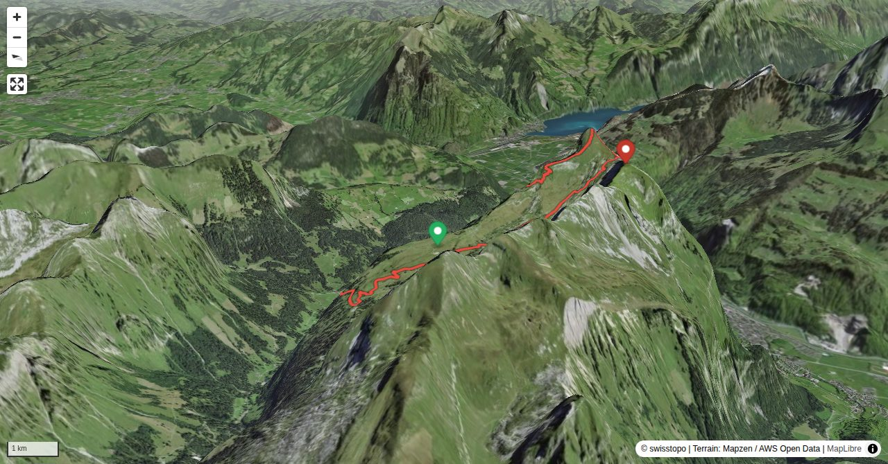

Das Glarnerland wird oft liebevoll-spöttisch als «Zigerschlitz» bezeichnet. Dies ist nicht zuletzt der gewaltigen Ostwand von Rautispitz und Wiggis zuzuschreiben, mit fast 2000 m Höhe verstärkt sie den Eindruck des Glarner Haupttales als Schlitz zwischen himmelhohen Bergwänden. Im gleichen Atemzug wie der Rautispitz muss immer auch der benachbarte Wiggis genannt werden. Dem Rautispitz aufgrund seines Höhenvorteils von gerade mal 1 m den alleinigen Vorzug zu geben, ist nicht nötig: Schwindelfreie Alpinwanderer können bei trockenen Verhältnissen die beiden Gipfel über eine ausgesetzte Wegspur perfekt miteinander verbinden. Die Gänsehaut beim Tiefblick nach Netstal und Näfels gibt’s gratis dazu!
Obersee – Grapplialp P. 1359 – Geisskappel – Rautispitz: 3–4 Std.
Quick Facts
| Summit elevation | 2277 m |
|---|---|
| Difficulty | SAC T4 Alpine hiking with exposure, rougher terrain, and sections that are not suitable for beginners. Guide |
| Trailhead | Obersee |
| Region | Northern Alps |
| Canton | Glarus |
| Distance | 12.3 km (out-and-back) |
| Total ascent | ~1406 m |
| Elevation range | 986-2277 m |
| Route sources | SAC Route Portal |
| Route author | Fabian Lippuner (via SAC Route Portal) |
Photos

Tiefblick vom Rautispitz nach Näfels-Mollis am Glarner Talausgang.
© Fabian Lippuner
Am Kanzelartigen Gipfel der Wiggis.
© Fabian Lippuner
Der exponierte Verbindungspfad zwischen Rautispitz und Wiggis.
© Fabian Lippuner
Die "Zwei auf einen Streich": links Rautispitz, rechts Wiggis.
© Fabian LippunerPhotos: Fabian Lippuner — via SAC Route Portal
Planning
i
i
sac_scale (precise T1–T6) with
swissTLM3D Wanderwegart
fallback where OSM is silent (coarser T2/T3 and T4+ buckets).
Coverage: OSM 75.0% · swisstopo 23.9% · unknown 0.0%.Elevations computed from the inlined GPX track (SwissTopo height API).
Loading forecast…
Start: Obersee (991 m)
Route returns to Obersee.
3D Terrain View

Route Details
Vom Obersee über Geisskappel und den Rautispitz
- Obersee – Grapplialp P. 1359 – Geisskappel – Rautispitz: 3–4 Std.
- Rautispitz - Wiggis - Sattel P. 2168: 1 Std.
- Rautispitz – Sattel P. 2168 – Rautialp – Grapplistafel – Obersee: 2–3
Terrain & safety
Im Aufstieg über die Geisskappel steiler, bei Nässe rutschiger Bergweg, teils mit Seilen versichert (T3+). Die Querung vom Sattel P. 2166 über die Höchnase zum Wiggis ist zwar ausgesetzt, dank Drahtseilen an neuralgischen Stellen und der ausgetretenen Wegspur erstaunlich gut begehbar – wenn alles trocken und schneefrei ist! Ansonsten begnügt man sich besser mit dem Rautispitz.
Source: SAC Route Portal
Field Reference
| Trailhead | Obersee | 47.08810, 9.02030 |
|---|---|---|
| Summit | Wiggis (2277 m) | 47.06533, 9.02545 |
Coordinates are WGS84 decimal degrees (lat, lon). Emergency: 112 (general) or 1414 (Rega air rescue). Page URL: